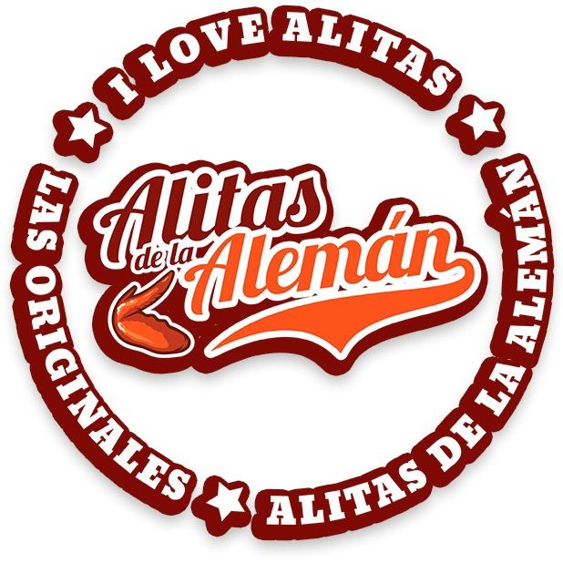
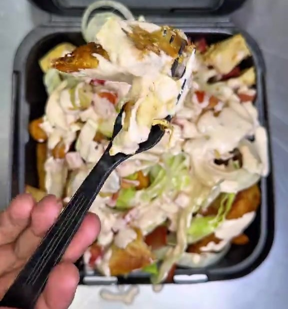
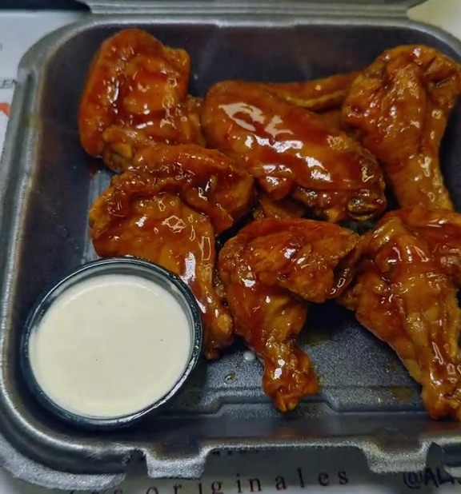
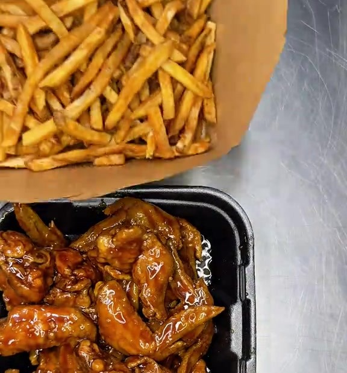

Para Alitas de la Alemán



274.7K
vistas en un solo video.
La gente quiere
sus alitas.
Su TikTok @alitasaleman.hn, video del 4 de octubre. Fotos de sus propios videos.
Para pedir,
cuatro números.
- 9603-6732 línea 1
- 9615-4856 línea 2
- 9746-0609 línea 3
- 9651-8746 línea 4
Los cuatro números que ustedes publican para domicilio.
“ayer llame llame llame llame y me quede con las ganas de comer alitas”
“A qué número hago el pedido con envío mañana. Me envían el WhatsApp”
20+
comentarios piden el número o preguntan cómo pedir.
Comentarios de su TikTok, palabra por palabra. Conteo nuestro sobre 347 comentarios.
Un solo WhatsApp
toma el pedido
completo.
Buenas, quiero 24 alitas a domicilio
¡Con gusto! 24 Alitas, L 395. ¿A qué dirección se las llevamos?
Res. Las Uvas, bloque C, casa 14, portón negro
Listo, Marta. Su pedido ya está en cocina. Total L 395, se paga al recibir.
Conversación de ejemplo. L 395 es el precio que ustedes dieron en un comentario.
Y entra solo a la cocina.
Panel real de Casa Digital. Los pedidos y sus precios son de ejemplo.
Usted ve el día en su celular.
Panel real de Casa Digital. Las cifras son de ejemplo, no ventas de Alitas de la Alemán.
¿Lo vemos con su menú?
Se lo armamos con sus productos y sus precios para que lo pruebe antes de decidir nada.
Escríbanos por WhatsApp+1 (765) 543-4251
 Casa Digital by Clientia Tech
Casa Digital by Clientia Tech